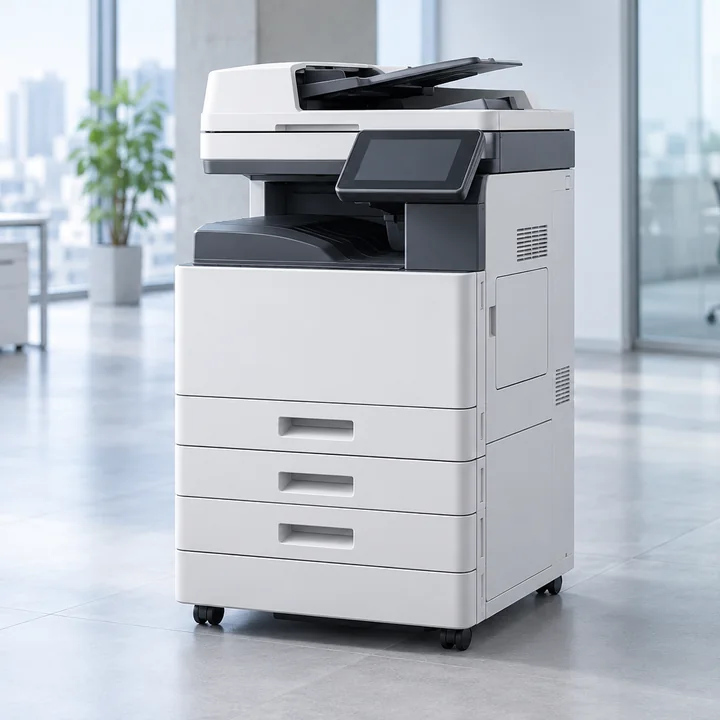

전남광주통합특별시 강진군 도암면 복합기렌탈 상담을 위한 안내 페이지입니다.
복합기·복사기·프린터의 기종과 렌탈료를 비교하고, 소모품·설치·출장 AS 조건을 확인하세요.
강진 도시 안내의 업체 정보를 연결하며, 실제 설치 주소의 서비스 가능 여부는 업체 상담이 필요합니다.
복합기·복사기·프린터의 기종과 렌탈료를 비교하고, 소모품·설치·출장 AS 조건을 확인하세요.
강진 도시 안내의 업체 정보를 연결하며, 실제 설치 주소의 서비스 가능 여부는 업체 상담이 필요합니다.

📌 도암면 복합기 설치 상담 체크리스트
전남광주통합특별시 강진군 도암면에서 복합기를 렌탈하려면 설치 주소와 업무 조건을 먼저 정리하는 것이 좋습니다. 기존 강진 지역 페이지에 안내된 업체를 연결했습니다. 이 목록만으로 도암면에 지사가 있거나 출장이 확정되었다고 볼 수는 없으므로, 정확한 도로명 주소를 알려 설치 가능 여부와 방문 일정을 확인하세요. 월 흑백·컬러 출력량, A3 사용 여부, 양면 스캔과 네트워크 인쇄 기능을 알려주면 필요한 기종을 비교하기 쉽습니다. 건물 층수, 엘리베이터 유무, 출입문 폭, 전원과 인터넷 연결 환경도 함께 전달해 주세요. 견적서에서는 기본 제공 매수와 초과 단가, 토너·부품·출장비 포함 여부, 부가세, 계약 기간과 해지 조건을 각각 확인하는 것이 중요합니다. 같은 강진군 안에서도 주소와 운반 조건에 따라 방문 일정이나 추가 비용이 달라질 수 있습니다. 강진군의 다른 행정읍면동으로는 강진읍·군동면·칠량면·대구면·신전면 등이 있습니다.
행정읍·면·동 기준: 2026-10-12. 법정동 주소와 다를 수 있으니 실제 설치 주소를 기준으로 상담하세요.
전남광주통합특별시 강진군 도암면 복합기렌탈 후회 없이 고르려면 어디부터 봐야 하나요?
전남광주통합특별시 강진군 도암면의 복합기 기종·요금과 설치 상담 시 확인할 내용을 안내합니다.
📍 전남광주통합특별시 강진군 도암면 복합기렌탈 상담 안내


전국 인기 복합기 기종 & 렌탈 요금
출력량과 용도에 맞춰 최적 기종을 추천해 드립니다
| 기종 | 유형 | 출력 속도 | 주요 기능 | 월 렌탈료 | |
|---|---|---|---|---|---|
 |
A4 흑백 복합기 컴팩트 소규모 사무실, 1인 창업, 스타트업 |
A4 흑백 레이저 | 분당 30매 | 인쇄·복사·스캔, 양면 인쇄, 유선 네트워크 | 월 20,000원~ |
 |
A4 컬러 복합기 네트워크 1~5인 사무실, 일반 사무 환경 |
A4 컬러 레이저 | 분당 31매 | 인쇄·복사·스캔·팩스, 양면 인쇄, 유무선 네트워크, 대용량 급지 | 월 33,000원~ |
 |
A4 컬러 복합기 디자인·마케팅, 컬러 자료 출력이 잦은 곳 |
A4 컬러 잉크젯 | 분당 25매 | 컬러 인쇄·복사·스캔, 양면 인쇄, 모바일 프린트 | 월 35,000원~ |
 |
A3 컬러 복합기 중대형 사무실, 인쇄물 품질이 중요한 업종 |
A3 컬러 레이저 | 분당 22매 | A3 컬러 출력, 고속 스캔, 대용량 급지, 보안 인쇄 | 월 45,000원~ |
 |
A3 흑백 복합기 도면·서류 출력이 많은 사무실, 설계·법무 |
A3 흑백 레이저 | 분당 25매 | A3 출력, 인쇄·복사·스캔·팩스, 자동 원고 이송(DADF), 대용량 토너 | 월 50,000원~ |
 |
A3 컬러 복합기 고속·대용량 대규모 사업장, 학교·병원·관공서 |
A3 컬러 레이저 | 분당 30매 | 대량 출력, 고속 스캔, 대용량 급지, 원격 모니터링 | 월 100,000원~ |
 |
5G 라우터 CNR-5G500 무선공유기 AI 교육·공사현장·임시 사무실 |
5G·LTE 라우터 | 해당 없음 | Wi-Fi 6, 기가비트 LAN 2포트, 유·무선 인터넷 연결 | 월 130,000원 부가세 별도 3일 80,000원 15일 100,000원 |
※ 요금은 약정·출력량에 따라 달라질 수 있으며 정확한 견적은 상담 시 안내됩니다.
렌탈 진행 절차
상담 한 번이면 설치까지 빠르게
01
상담 신청
전화 또는 카카오톡으로 사용량과 환경을 알려주세요.
▶
02
기종 추천
출력량·용도에 맞는 최적 기종과 요금제를 제안합니다.
▶
03
방문 설치
당일/익일 방문으로 설치와 네트워크 세팅, 사용 교육을 진행합니다.
▶
04
사용 시작
토너 자동배송과 24시간 이내 A/S로 걱정 없이 사용하세요.
▶
05
사후 관리
정기 점검과 원격 모니터링으로 항상 최상의 상태를 유지합니다.
전남광주통합특별시 강진군 도암면 5G 라우터렌탈 안내
❓ FAQ 복합기렌탈 자주 묻는 질문
도암면 임시 사무실도 단기 렌탈을 상담할 수 있나요?
이용 시작일과 종료일, 필요한 기기 수량, 출력량을 먼저 알려 단기 계약 가능 여부를 확인하세요. 장기 계약과 요금이 다를 수 있으며 설치·회수비, 최소 이용 기간, 연장 요금도 함께 비교해야 합니다.
복합기를 설치하기 전에 공간과 네트워크는 어떻게 확인하나요?
기기 크기뿐 아니라 용지함을 열 공간과 점검 공간도 확보하세요. 출입문·복도 폭, 엘리베이터 유무, 설치 층수를 알려 운반 조건을 확인하고, 전원 콘센트와 유선 LAN 또는 Wi-Fi 연결 가능 여부를 점검해 주세요.
컬러 복합기와 흑백 복합기는 어떻게 고르면 되나요?
계약서·공문서 위주라면 흑백 모델을, 홍보물·발표자료 등 컬러 출력이 잦다면 컬러 모델을 비교하세요. A3 출력, 양면 스캔, 자동 원고 급지, 여러 PC의 네트워크 인쇄 등 실제 업무에 필요한 기능을 먼저 정하면 불필요한 비용을 줄일 수 있습니다.
도암면과 다른 지역의 같은 이름 동은 어떻게 구분하나요?
이 페이지는 전남광주통합특별시 강진군 도암면를 기준으로 안내합니다. 견적 요청 시 읍·면·동 이름만 전달하지 말고 시·도, 시·군·구, 도로명 주소를 함께 알려주세요. 행정동과 법정동 주소가 다를 수 있으므로 실제 설치 주소를 기준으로 상담하는 것이 좋습니다.
전남광주통합특별시 강진군 도암면 복합기렌탈 견적을 요청할 때 무엇을 준비하나요?
설치 주소, 월 흑백·컬러 예상 출력량, A3 용지 필요 여부, 원하는 계약 기간을 정리해 주세요. 기본 제공 매수, 초과 출력 단가, 부가세와 소모품 포함 여부를 같은 조건으로 비교하면 실제 월 비용을 파악하기 쉽습니다.